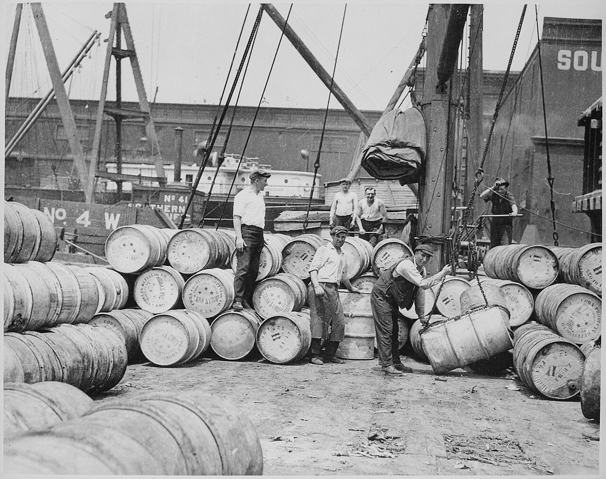

In 1960, half the cost of moving a truckload of medicine from Chicago to Nancy, in France, was spent in ports. Most of it went on the wages of men who loaded and unloaded cargo by hand, according to the American Association of Port Authorities. Malcom McLean, who owned a trucking company, had already started on a simpler idea: put the cargo in a box and stop unpacking it.
In April 1956 a converted tanker, the Ideal X, left Port Newark, New Jersey, for Houston with 58 of his boxes on board. Loading them took less than eight hours. Ships loaded the old way spent weeks in port.


The voyage showed that the box worked. Other companies could use it only after they agreed on its edges: a standard size, a standard way to stack it, and standard fittings for cranes to grip.
A reusable part becomes useful to everyone only when its edges are standard enough for other people and other systems to use it. The same applies when you ask an AI agent to build something you will need more than once.
One company's box
McLean's boxes were 35 feet long, the longest trailer then allowed on Pennsylvania's highways. They fitted his trucks and his ships. Matson, a shipping line in the Pacific, used 24-foot boxes, because California's road rules were different. In the United States alone there were dozens of container systems that could not handle each other's boxes.
The standard made it reusable
The United States adopted a container standard in the early 1960s, and the international standard followed in the late 1960s. The international one, ISO 668, set lengths of 10, 20, 30 and 40 feet, and the industry still counts its cargo in 20-foot units. McLean's own 35-foot box was not among the standard sizes.
Once the edges were fixed, a box packed in one country could be lifted by another country's crane onto another company's ship. The economists Daniel Bernhofen, Zouheir El-Sahli and Richard Kneller estimate that among 22 industrialised countries, containerisation raised trade by about 1,240 per cent over the 15 years after each country adopted it.
The same choice in software
Software built with an agent often grows one request at a time. Ask for a way to pick a colour for a label, and the agent builds a colour picker. Ask a month later for a way to pick a theme, and it can just as easily build a second picker, with its own code and its own bugs. Then a third, for document icons.
The three jobs have the same shape: a few options shown side by side, one of them selected. A brick is a part with standard edges, and here the edges are simple: a list of options goes in and one choice comes out. One picker built that way serves all three jobs.
| Job | Own code (three pickers) | One picker |
|---|---|---|
| Label colour | picker 1 | options: colours |
| Theme | picker 2 | options: themes |
| Document icon | picker 3 | options: icons |
| A bug fix | three places | one place |
A fourth use then needs new options, not new code. An agent will build whatever part you ask for. Whether it builds a one-off or a brick depends on whether someone asks where else the part will be used and what its edges should be. So before you ask for a second version of something the agent has already built, ask it to show you the first one and describe its edges.
The edges also limit what can be built later. If the picker can only show a short list, every feature that uses it inherits that limit, and the feature that later needs two hundred options has to change the brick or work around it.
What the box did to the piers
The container pushed its own requirements onto every port that wanted it. Container ports need much less labour and much more land, for cranes and for the yards where containers and trucks wait.
In 1956 Manhattan's piers made up the largest port in the world. They never containerised. The work moved across the harbour to Port Newark and to a new terminal at Elizabeth, New Jersey, built for McLean's company, Sea-Land. The Ideal X had sailed from Port Newark. According to a 2018 Federal Reserve paper, the port of Manhattan "no longer exists as a freight port."